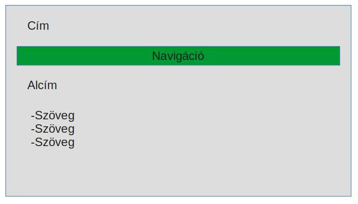
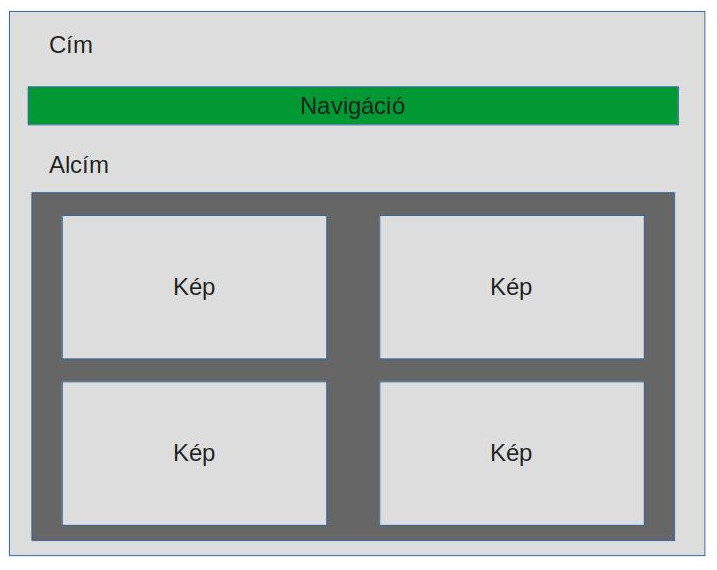

Kezdőoldal terve:
Képes oldalak terve:
Nehézségek, változtatások:
A táblázatokban az arányos mező elosztásban votak bonyodalmak. A képek eligazítása megfelelő méretben és teljes terület kitöltéssel nem sikerült.
| Bemutatkozás | Hobby | Sport | Leírás |
A táblázatokban az arányos mező elosztásban votak bonyodalmak. A képek eligazítása megfelelő méretben és teljes terület kitöltéssel nem sikerült.